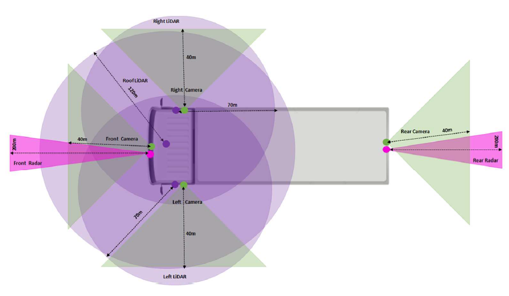
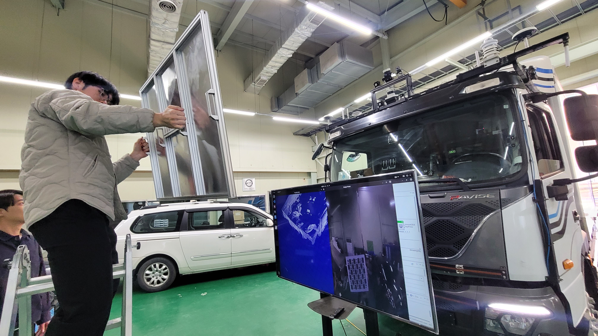
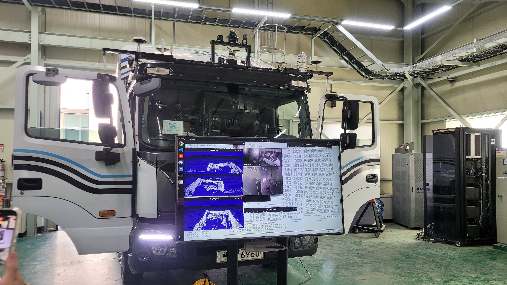
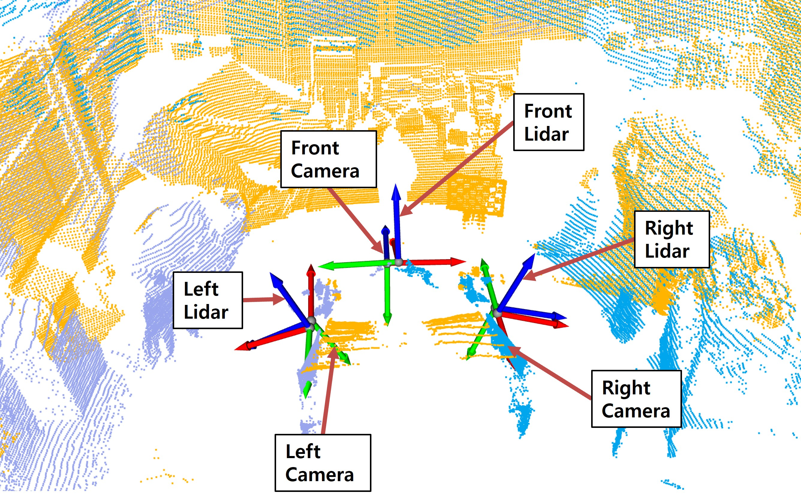
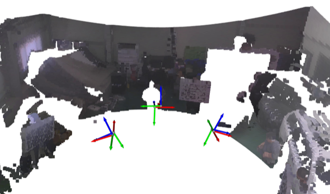

새만금 자율운송 상용차 실증지원 인프라 조성
Calibration Infrastructure for Autonomous-Driving Demonstration
CalibrationCamera-LiDARLiDAR-LiDARAutonomous DrivingDataset
Overview
새만금 자율운송 상용차 실증 구간의 안전도 평가를 위해, 카메라/라이다 등 멀티센서 기반의 고품질 AI 학습용 라벨링 데이터셋을 구축한 연구이다. 다중센서 전처리 기술과 이종센서 융합 특징 추출 기술을 개발하여, 상용차 주행 환경에서 발생하는 다양한 동적 객체를 정밀하게 인지할 수 있는 데이터 인프라를 마련했다.

Scope참여 연구 항목
- 체커보드 기반 타겟 캘리브레이션 데이터 취득
- 다중센서(Camera, LiDAR) 캘리브레이션 수행
- 캘리브레이션 결과 및 정합 오차 검증
My Role
01체커보드 기반 타겟 캘리브레이션 데이터 취득
- 대형 화물차량에 설치된 센서 특성상 높고 넓은 화각으로 주변 환경 데이터를 취득
- ChArUco 패턴판을 이용하여 캘리브레이션 타겟 인식률 향상


02다중센서(Camera, LiDAR) 캘리브레이션 수행
- FAKRA 카메라 Intrinsic 캘리브레이션을 전, 후, 좌, 우 카메라에 대해 수행
- 같은 방향의 Camera–LiDAR Extrinsic은 평면 기반, LiDAR–LiDAR Extrinsic은 ICP 기반으로 진행
- LiDAR–LiDAR calibration 시 overlap이 충분치 않아, 가까운 센서(left-front / front-right)끼리 캘리브레이션 후 projection하여 ICP source로 사용
- Camera 간 extrinsic calibration은 overlap이 존재하지 않아 타겟 기반 캘리브레이션이 불가 → overlap이 없는 환경에서는 Visual SLAM odometry 기반 캘리브레이션을 대안으로 고안
03캘리브레이션 결과 및 정합 오차 검증
- 모든 센서의 좌표계가 단일 좌표계로 정렬된 것을 확인
- 정량 성과 — Camera intrinsic 재투영 RMSE 0.2px 이내, Camera–LiDAR extrinsic RMSE 3mm 이내, LiDAR–LiDAR extrinsic RMSE 4mm 이내
- LiDAR 포인트 클라우드의 각 포인트에 대응되는 카메라 이미지의 RGB 값을 투영하여 색상 복원으로 정합 정성 검증

